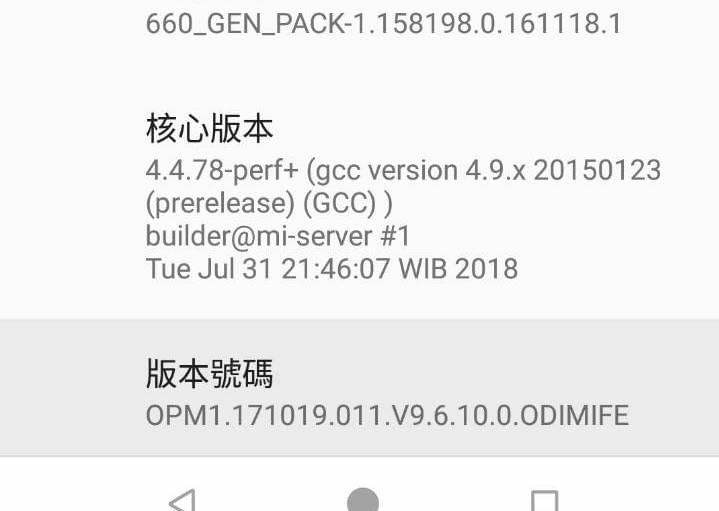
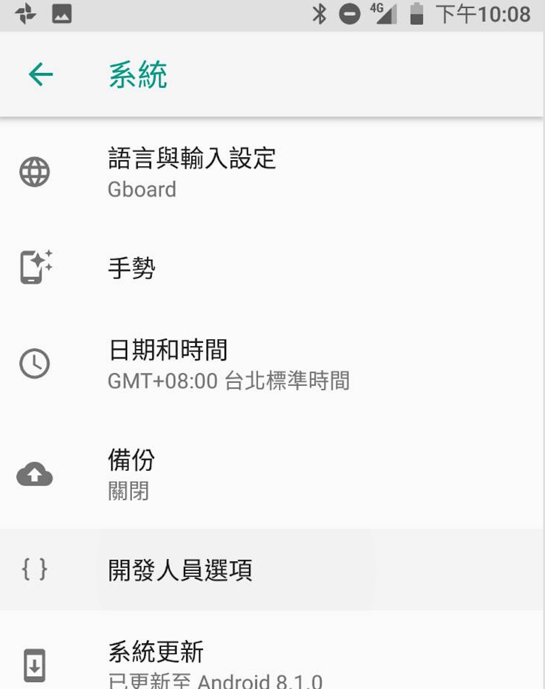
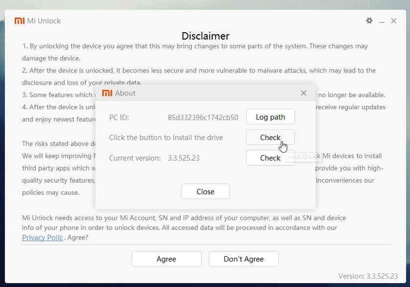
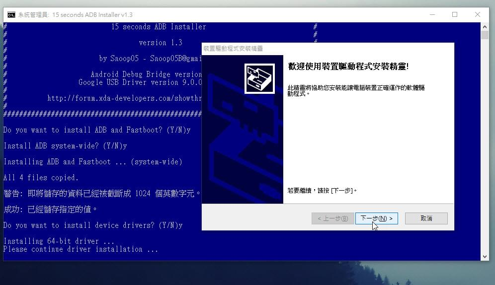
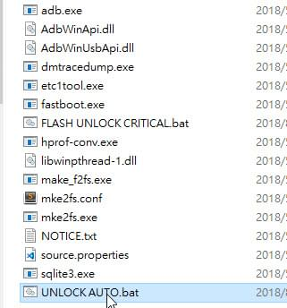
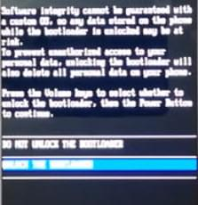
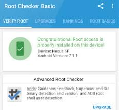
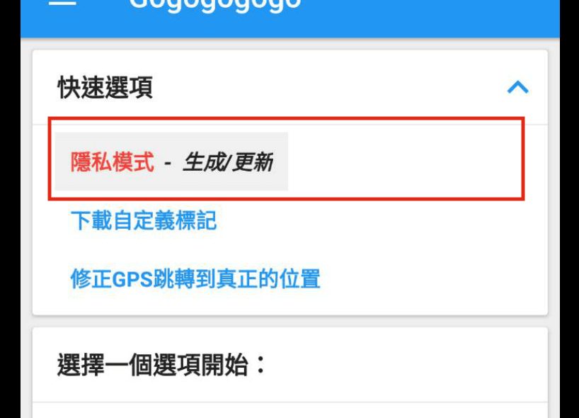
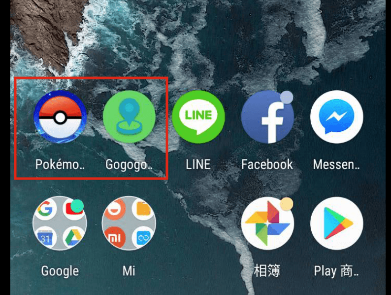
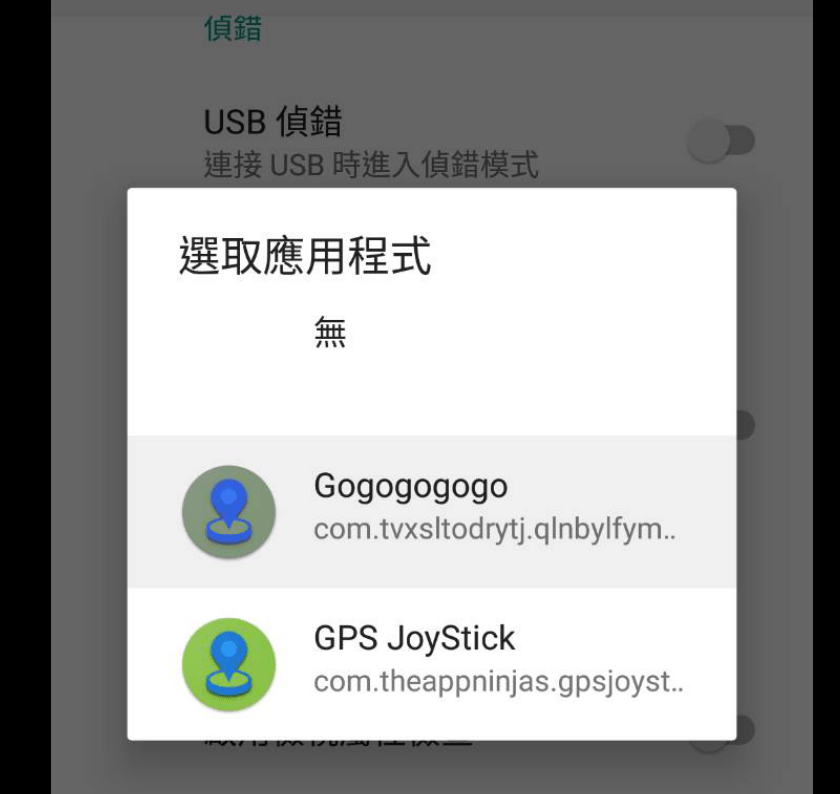

[開發筆記]小米手機A2 飛人fake gps with pokemonGo
小米手機A2 飛人fake gps with pokemonGo
2018/11/11 雙11購買之小米A2，使用fake gps飛人工具遊玩PokemonGO修改教程。
關鍵字
- 小米 A2
- Android 8.1 Oreo
- GPS JoyStick Fake GPS Location 虛擬定位 飛人
- 寶可夢 PokemonGO
- 無法取得GPS訊號 11
- 改機 Magisk root
先前知識:
- 刷機步驟會會有讓手機變成磚塊的風險，且步驟中會導致手機重置，請依能力先將檔案進行備份
- 要能夠登入PokemonGo遊玩須過SafetyNet，第三方ROM不會通過，或是改機後不隱藏root會卡在PokemonGo無法登入
- 舊版本的Android 5.0 進開發者設置選擇gps模擬位置程式 gps 就可以使用飛人程式(但是新手機就沒有)
- 若飛人後出現(無法取得GPS訊號 11) 就是新版本Android 6,7,8 以後因為系統安全條款關係，直接使用飛人程式會導致遊戲無法取得位置
綜合以上，要做的事情就是改機取得系統最高權限，並用最高權限將飛人程式移至系統層級讓他能夠修改並模擬GPS位置。
大致步驟為
1.Unlock Bootloader 讓手機可以進行刷機狀態
2.安裝magisk manager 並以magisk root手機 取得系統權限
3.安裝fakegps with joystoick 並重新生成新命名gps程式
4.用link2SD將飛人gps及生成重命名程式移至系統層級
5.開啟magisk hidden pokemonGo 並隱藏其root
6.進開發者設置選擇gps模擬位置程式
7.登入並遊玩
開啟開發者選項
1.打開設定
2.進入"系統"
3.點"關於手機"
4.連點"版本號碼" 直到開啟 “開發人員選項”

進入"系統"->“開發人員選項” 後將以下開啟
- OEM 解鎖
- USB 偵錯
 開發人員選項">
Unlock Bootloader Xiaomi Mi A2
刷機前要解鎖Bootloader，步驟為:
1. 進入fastboot 模式
進入fastboot 模式先關機。
關機後，按音量鍵減-後按開機鍵，五秒後放開音量鍵減-再放開開機鍵看到兔子就成功了。
若成功進入可看到畫面
2. 安裝小米驅動
1.下載 驅動包 並解壓縮
2.先進入fastboot模式，點擊執行"miflash_unlock"
3.點右上角的設定齒輪
4.點中間的Check
5.出現"Connect your device again" 將USB線重插拔
6.然後他將會自行安裝，結束後按關閉，驅動就安裝好了

3. 下載安裝ADB tool
1.先下載ADB TOOL
2.下載後點滑鼠右鍵，用"系統管理員身分執行"安裝
3.用鍵盤打 Y / Yes 安裝 ADB and Fastboot
4.用鍵盤打 Y / Yes 安裝 ADB system-wide
5.用鍵盤打 Y / Yes 安裝 Drivers
6.繼續安裝 等待15秒 - finished!

4. UNLOCK BOOTLOADER
1.先下載 “UNLOCK BOOTLOADER XIAOMI MI A2包”
2.確認手機正與電腦連接，並處於fastboot模式
3.點擊"unlock auto"
4.此時手機會出現警告畫面，按兩次音量減(-)選"unlock the bootloader"
5.按手機開機鍵確定
6.此時手機將會自動重起兩次並解鎖成功


5. 建議
當unlocked bootloader後，這邊建議關機後重新進入一次fastboot mode ，然後點擊資料夾中的"flash unlock critical" .bat，這樣才能失敗時可以重刷firmware 。
如果要降級ROM 也必須執行此步驟
參考xda論壇 此篇文章 Unlock Bootloader Xiaomi Mi A2
降級ROM
需要版本為V9.6.10.0.ODIMIFE 若沒遇到問題可以跳過此步驟。
來源
因為目前找到的root 裡面的boot.img 是針對images_V9.6.10.0.ODIMIFE_8.1 進行root，
因新手機版本過高刷入Magisk後會導致開機開白畫面，因此先刷降板起來
1.下載ROM jasmine_global_images_V9.6.10.0.ODIMIFE
2.下載線刷工具MiFlash
3.執行"XiaoMiFlash"
4.點加載設備並選擇ROM
5.右下角選擇"全部刪除"
6.點擊刷機直到完成重開機
Root 小米 Mi A2 Magisk
1.下載root 包
2.確認手機目前在fastboot模式
3.解壓縮並進入"ROOT XIAOMI MI A2 MAGISK 16.7"資料夾
4.執行"ROOT AUTO" 直到結束
5.執行"patched_boot"
6.若成功重新開機，基本上就root 成功了
參考xda論壇 此篇文章 How to Root Xiaomi Mi A2 Magisk
檢查root 是否成功
安裝Root Checker並檢查是否通過root
因為只是要檢查而已，確認成功就可以刪除此APP
成功會看到畫面如

安裝magisk
https://github.com/topjohnwu/Magisk/releases
手機開機後下載MagiskManager.apk並安裝
安裝 GPS JoyStick Fake GPS Location
- 1.手機下載並安裝GPS JoyStick Fake GPS Location
- 2.用生成模式生成另一個app好讓其簽名不是容易被pokemonGo識別為作弊程式的名稱(例如 Gogogogogo)


這邊要注意，生成完後不能將原本那一個應用程式刪除，不然移置系統層級後會因為API接口遺失導致APP出錯 reddit原文。
用link2SD 將GPS 直至系統層級
1.手機下載並安裝link2SD
2.執行後准許root 權限後對你命名的飛人程式長按
3.點"轉換成系統應用程式"
4.同一步驟將"GPS JoyStick Fake GPS Location"移至系統層級
5.重新開機
Magisk Hide PokemonGO
這邊要將對pokemonGO隱藏root 讓其可以登入遊玩
1.手機點擊執行Magisk manager 並點擊左上角設定
2.點Magisk Hide 找到PokemonGo並打勾
3.點設置 “選隱藏Magisk manager”
4.重新開機
GPS設置
1.進入開發人員選項>選取模擬位置應用程式>選擇你重新命名的程式(Gogogogogo)
2.進入你重新命名的程式(Gogogogogo)按左上角的設定
3.這邊建議將"禁用位置服務"打開

關於SafetyNet
pokemonGo這款遊戲會檢查系統的SafetyNet，對於改過ROM的手機或是root過的手機，就無法通過驗證就無法使用官方的 Android Pay 進行購物，基本上Google Play Service 2.3 以上就需要通過 SafetyNet。
目前想要過SafetyNet，一定要用原本ROM進行root，第三方ROM一定是行不通的
以magask root 後也一定要對pokemonGO Magisk Hide
結果demo
最後打開gogogogo執行並飛到座標，再執行PokemonGO就大功告成囉